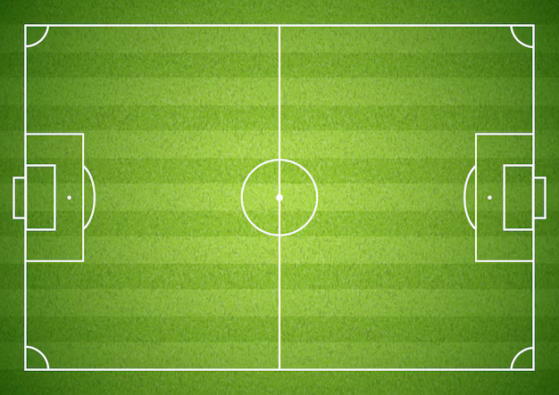

Não pertences a nenhuma equipa ainda.
Esta equipa ainda não tem nenhum jogo terminado.
Análise de rendimento
Saldo de remates e cruzamentos
Distribuição percentual dos eventos
Peso de cada campo no total de ações registadas
Evolução — Golos
Marcados vs. sofridos, jogo a jogo
Marcados
Sofridos
Evolução — Cartões
Amarelos vs. vermelhos, jogo a jogo
Jogos considerados
| Data | Adversário | Golos M. | Golos S. |
|---|
Total e média por jogo de cada evento
| Evento | Total | Média/Jogo | Por 90 min |
|---|
Domínio por métrica
A favor vs. contra, jogo a jogo, por campo do Registo de Jogo
Mapa de calor combinado (6 jogos)

Rotação do plantel
Minutos jogados nestes 6 jogos